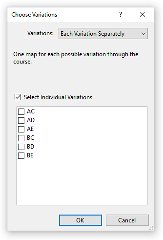
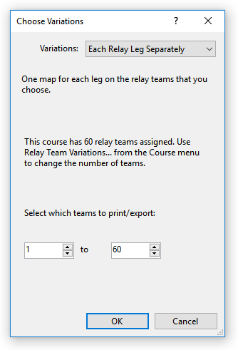
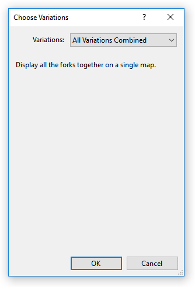

Choose Variations
Select which variations of a course to print. There are three possible settings.
Each variation separately:

When using this option, each variation is printed once a separate sheet. You can print all variations, or select only some variations.
Each relay leg separately:

When using this option, a separate sheet of paper is printed for each relay leg of each team, as defined using the Course/Relay Team Variations command. So, if there are 10 team with 4 legs per team, 40 maps will be printed. When using this option, it is very helpful to print the team and leg number on the map by using the Add/Text command and using $(RelayTeam) and $(RelayText) in the text.
All variations combined:

When using this option, a single page is printed showing all the variations combined.